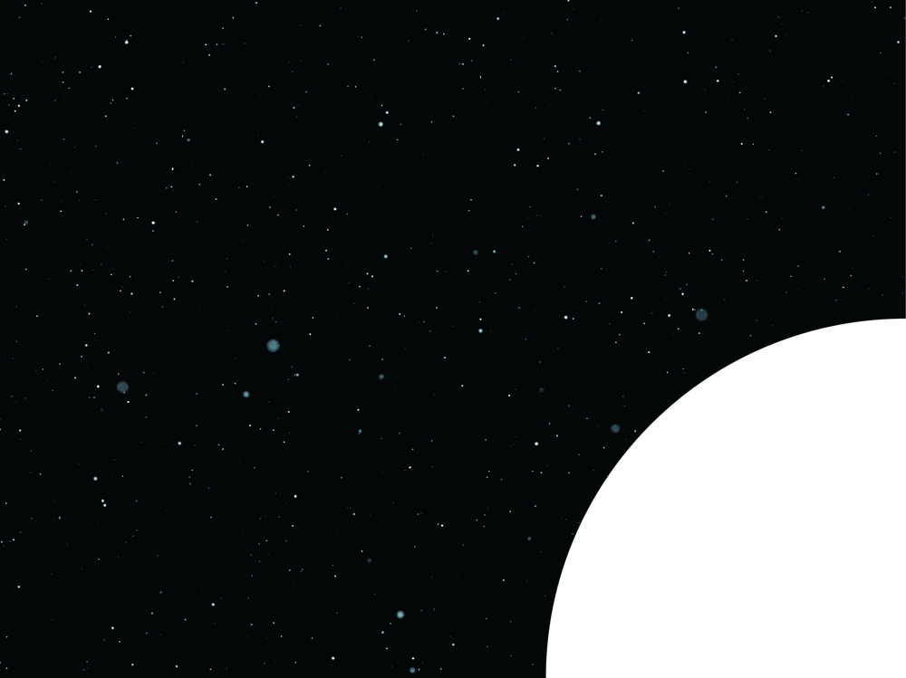
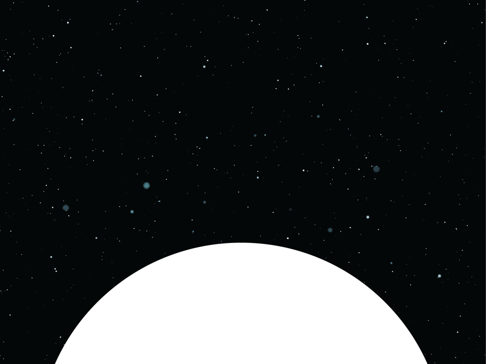
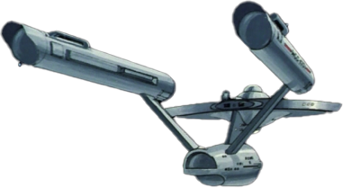
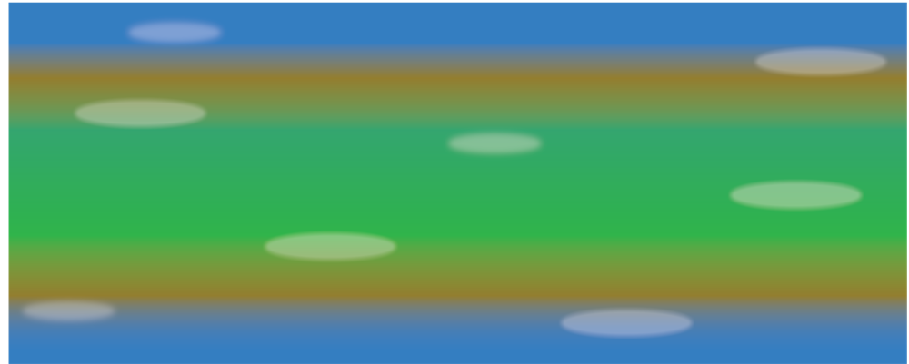
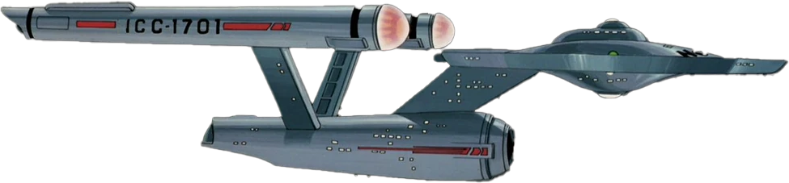
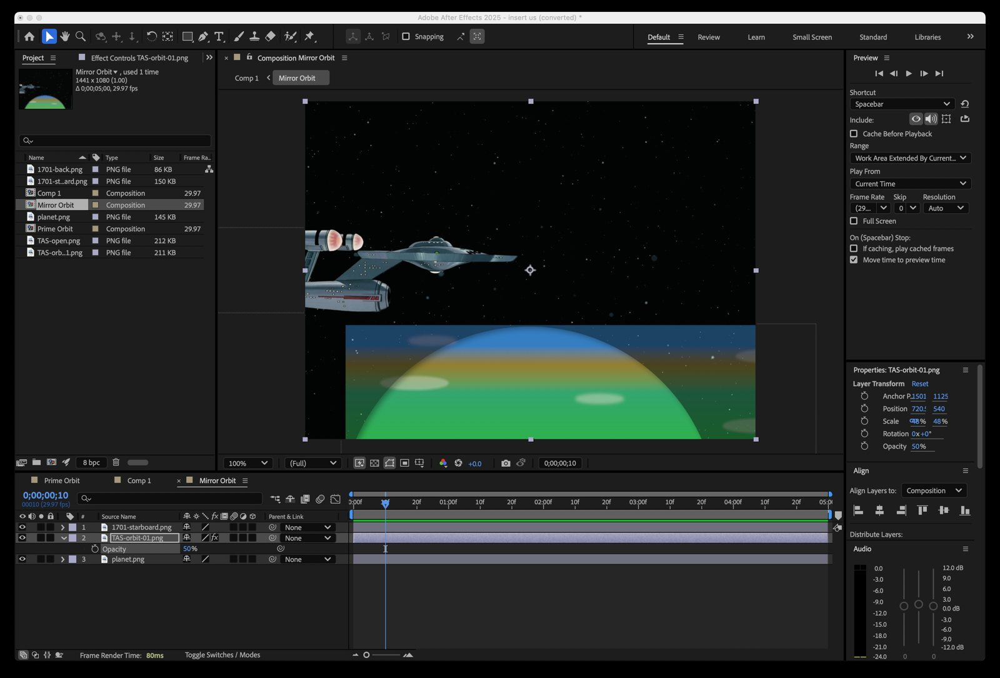

WeeklyNovember 24, 2024MMAN 20AYesterday's Son
“Yesterday’s Son” update
Angel Rittenburg 11/24/2024
MMAN20A
From Wednesday’s Animation Club/lab
- This week, I needed some footage that I thought would be easy to get from AI.
- This week’s lesson: AI can take more time to use than good ol’ After Effects.
I was excited to show off https://hailuoai.video/ so I thought of trying a simple prompt.
I was also looking for an AI to tween with.
Animated
Footage
- About 90% of the image-to-video stuff I’ve done worked out well. I thought I would try a cartoon. Easy, right?
- I used two different images for two different angles.
- Prompt: Ship approaches slo-mo rotating planet. Cartoon style animation.
The Easy Way: Ol’ skool cel animation
- I took some screenshots of the Animated Series.
- Photoshop: created some PNGs of the ships.
- Illustrator: created two PNGs of space with the planet in frame.
- Illustrator: simple gradient strip to make the planet surface. No Keylight needed.
- After Effects: Assembly. ALL images are RECTANGLES like cels. I stacked them and animated them just like old people used to do it.





Assembly & Renders

A surprise “recreate” prompt on an existing image from the ‘home’ page.
- The Vulcan man with a beard and blue uniform with a ceremonial sash embellished with medals turns his head to look into the camera. In front of the Vulcan is a huge glass screen covered in numbers and patterns of various colors. Through the glass screen, the Vulcan can be seen smiling at the camera.
1 / 6
Swipe, use the arrow keys, or pick a slide.
This week's lesson
AI can take more time to use than good ol' After Effects.
- Date
- Sunday, November 24, 2024
- Course
- MMAN 20A
- Where
- Wednesday's Animation Club/lab
- Project
- Yesterday's Son
- Tools
- Hailuo AI, Photoshop, Illustrator, After Effects
Star Trek characters and starship designs are trademarks of Paramount. This is a student fan project and is not affiliated with or endorsed by Paramount. Clips, renders and slides © 2024 Angel Rittenburg.